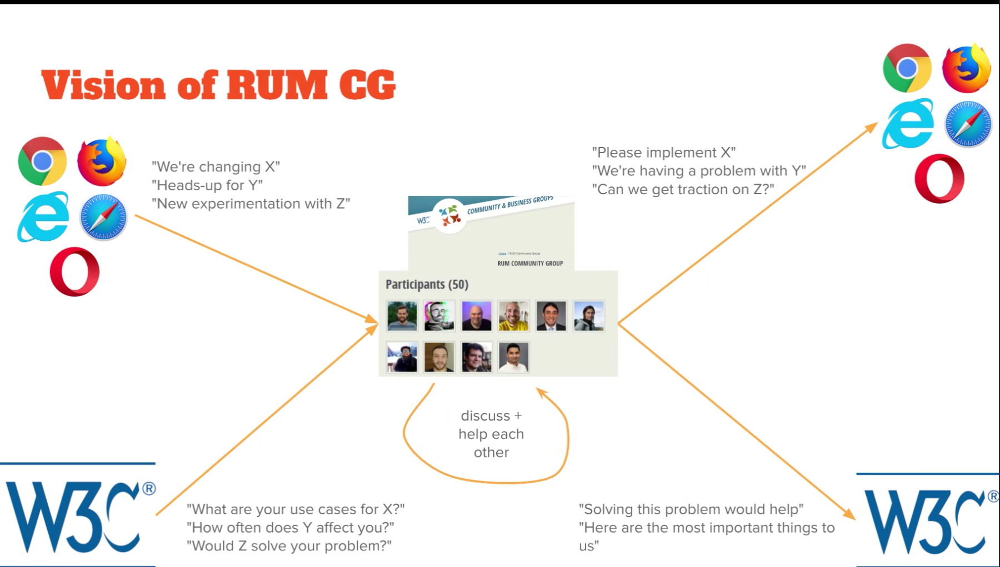

Attendees
- Nic Jansma, Cliff Crocker, Karlijn Lowik, Sergio Gomes, Sergey Chernyshev, Simeon Totev, Barry PollardAndy Davies, Mateusz Krzeszowiak, Philip Tellis, Yoav Weiss, Paul Calvano, Edwin Molina, Georgi Petrov, Gilberto Cocchi, Ivailo Hristov, Michal Mocny, Nev Wylie, Robin Marx, Ivailo Hristov, Erwin Hoffman, Magnus Dahl, Ben Zörb, Ram Thiru, Rick Viscomi (some may have been missed that joined later)
Agenda
- Greetings from the Chairs
- Welcome everyone to the group (+ a quick round of intros)
- Logistics (where and how to communicate)
- Goals and Meeting Topics for 2025
- Barry’s Bytes
Notes
- Meeting will be NOT be recorded today
- Role of chairs discussed:
- Plan meetings and agenda
- Facilitate
- Build consensus
- Communicate externally
- NOT arbitrators of what’s important
- Vision of RUM CG discussed

- What is the diff between a CG and a WG?
- Lighter version of a working group
- Don’t need to pay $$
- Not doing specs (that’s WG related)
- Discussion and influence group
- We can still ‘make stuff’, communicate, etc.
- Intros by attendees were given (~25 in attendance)
- Logistics for CG
- Monthly cadence, Fridays slightly preferred (17 to 10)
- 60m
- Using Google Meet for meetings
- There is a #w3c-rum-community-group channel in web perf slack (not archived)
- Goals/ideas were discussed
- Better tracking/visibility into vendor positions
- Funding browser work for features
- Header adoption (TAO, Server-timing)
- Browser vendor presentations
- Outreach to other groups (i.e. 3rd Parties)
- Adblockers & tracking protection
- Top tracking issues
- Implementation best practices
- When to fire the beacon/how to deliver
- SPA support
- Making sure we don’t step on each other’s toes (i.e. clearing RT buffers, multiple vendors on a page, etc.)
- Open source
- Securing the beacon
- RUM Archive
- 3 features going live in Chrome soon
- 29th Jan - 133
- Cross origin LCP no longer gated by TAO
- responseStart changing back, TTFB for Early Hints adopters will be finalResponseHeadersStart
- 5m prefetch heuristic removed for cache-control
- Cache control header must be used if using prefetch
- Prefetch may be used less due to this
Next meeting
- Chrome presentation/discussion
Action items
- Where should we post minutes and materials? (Chairs)
- Linked to agenda doc is fine
- Schedule the February meeting
- How are we tracking open issues/backlog of topics?
- Need to start a doc/repo for browser positions on features we care about
- Robin Marx - Open question for FF: Any idea if Firefox is planning to make this change as well? (TAO for LCP render times)